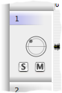

For each channel a separate waveform view is shown in the main frame. On the left side there is a header showing the name of the channel (the channel index) and a few gadgets: The "S" and "M" buttons turn on/off soloing and muting the channel. Solo is performed inplace, that is the channel is played through its regular channel.
The circle shaped icon indicates the panorama setting for that channel. At the moment these settings are not saved, so when you open a new sound file they are restored to defaults. If you click on the icon, a channel panorama window will open which allows you to change the azimuth and divergence of the channel's panorama. Alternatively, you can open the panorama panel as a popup view next to the mouse, by pressing and holding the button over the icon.
When opening a document, all tracks (all audio channel tracks and the marker track) are selected by default, which is indicated by a slight blueish background colour of their name label, as shown in the screenshot above.
You can unselect any track that you wish to exclude from cut/copy/paste operations. To unselect a track, Shift+Click on its name label. Unselected tracks appear with a dark grey background colour under the name label. Alt+Click selects or unselects all tracks at once. A plain Click on an unselected track will select that track and unselect all other tracks. Meta+Click will toggle between one track being selected and all-tracks-but-one selected.